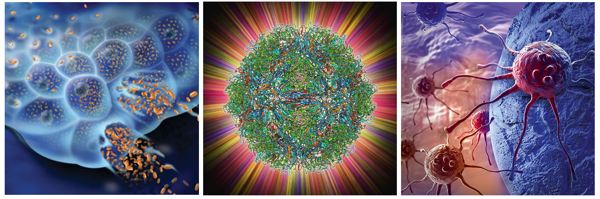

Comparative genomic analysis of parvoviruses using GLUE
This is Parvovirus-GLUE, a GLUE project developed to support comparative genomic and evolutionary analysis of parvoviruses (family Parvoviridae).
The parvoviruses are a diverse group of small, non-enveloped DNA viruses that infect an extremely broad range of animal species. The parvovirus family includes numerous pathogens of humans and domesticated animals.
However, parvoviruses are also being developed as next-generation therapeutic tools - for example, rodent protoparvoviruses are promising anticancer agents that show natural oncotropism and oncolytic properties, while adeno-associated viruses (AAVs) have been successfully adapted as gene therapy vectors and are leading candidates for the further development of human gene therapy.

Parvoviruses are considered excellent candidates for oncotherapy and gene therapy (represented artistically to the left and right, respectively). The capsid protein that forms the parvovirus virion (centre) is an important determinant of tissue tropism and impacts gene transfer efficiency. Systematic comparative analysis of parvovirus capsid proteins can inform development of parvovirus-based therapeutics.
License
This project is licensed under the GNU Affero General Public License v. 3.0.